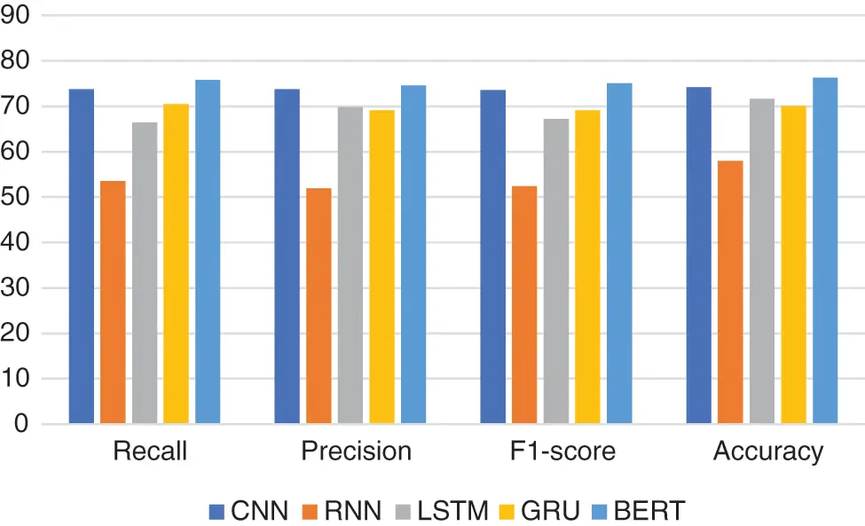
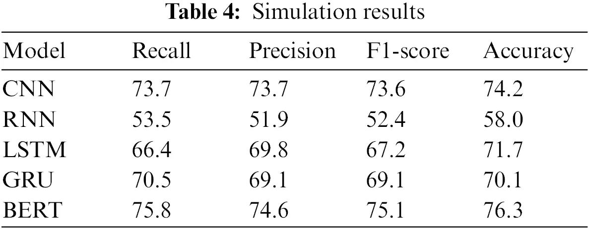

어느 과로 가야 할까 — BERT로 건강상담 글을 분류하다
비대면 의료가 일상이 된 시대, 사람들은 병명 대신 증상을 문장으로 털어놓는다. 그 서툰 문장을 읽고 올바른 진료과로 안내하는 일 — 우리는 다섯 개의 모델을 같은 무대에 올려 겨루게 했다.

“이 증상, 어느 과로 가야 하죠?”
비대면 의료 플랫폼에 접속한 사용자가 가장 먼저 마주하는 질문은, 역설적이게도 자신이 답할 수 없는 질문이다. “증상을 입력하세요”라는 빈 칸 앞에서 사람들은 병명을 쓰지 않는다. 쓸 수가 없다. 병명을 알았다면 애초에 상담이 필요하지 않았을 것이다. 대신 이렇게 쓴다. “며칠째 명치가 쓰리고 밤에 기침이 나요.” “손끝이 저리는데 목도 뻐근합니다.” 이 문장들은 의학 교과서의 어휘가 아니라 생활의 어휘로 쓰여 있다.
문제는 그다음이다. 이 서툰 문장을 읽고 “소화기내과입니다” 혹은 “정형외과와 신경과를 함께 보셔야 합니다”라고 판단하는 일 — 이 라우팅(routing)이야말로 비대면 의료의 첫 관문이다. 관문이 막히면 사용자는 엉뚱한 과에서 시간을 버리고, 정작 필요한 진료는 늦어진다. 코로나19 이후 상담 요청이 폭증하면서, 이 관문을 사람이 일일이 통과시키는 방식은 한계에 부딪혔다.
필자가 제2저자로 참여한 연구는 이 관문을 자동화하는 문제에서 출발했다. 자연어로 쓰인 건강상담 글을 읽고, 그것이 어느 진료과에 속하는지를 기계가 판별하게 만드는 것. 겉보기에 흔한 텍스트 분류 문제 같지만, 의료 도메인 특유의 까다로움이 있다. 증상 표현은 모호하고 중의적이며, 한 문장에 여러 과의 신호가 뒤섞이고, 무엇보다 학습에 쓸 만한 정제된 데이터가 절대적으로 부족하다. 이 제약 속에서 어떤 모델이 가장 잘 견디는가 — 그것이 우리의 물음이었다.
Chapter 2. 데이터와 과제전문의의 답변이 정답표가 되다
분류 문제를 풀려면 정답이 필요하다. 그런데 “이 증상 글은 어느 과인가”에 대한 정답을, 우리는 어디서 얻을 것인가. 여기서 데이터의 성격이 결정적이었다. 우리가 수집한 것은 단순한 증상 글이 아니라, 전문의가 실제로 답변을 단 건강상담 텍스트였다. 즉 질문에는 이미 전문가가 판단한 진료과의 맥락이 딸려 있었고, 이를 활용해 각 글을 아홉 개 의과목 범주로 라벨링할 수 있었다.
이 지점을 강조하고 싶다. 좋은 라벨은 좋은 모델보다 앞선다. 전문의의 답변이라는 신뢰할 수 있는 신호가 없었다면, 우리가 학습시킨 것은 결국 누군가의 주관적 추측이었을 것이다. 데이터를 정제하는 과정 — 광고성·중복·비의료 텍스트를 걷어내고, 범주 간 균형을 맞추고, 지나치게 짧거나 판별 불가능한 글을 제외하는 작업 — 은 화려하지 않지만 실험 전체의 신뢰도를 떠받치는 토대였다.
여기서 미리 분명히 해 둘 것이 있다. 이 시스템의 목적은 진단이 아니다. 모델이 “소화기내과”라고 답하는 것은 병을 진단하는 행위가 아니라, 사람을 적절한 전문가에게 연결하는 행위다. 최종 판단은 언제나 의료 전문가의 몫이며, 자동 분류기는 그 판단으로 가는 길을 안내하는 이정표일 뿐이다. 의료라는 도메인에서 이 경계는 아무리 강조해도 지나치지 않다.
Chapter 3. 다섯 모델의 대결같은 데이터, 다른 아키텍처
공정한 비교의 원칙은 단순하다. 같은 데이터, 같은 평가 셋, 같은 채점 기준. 그 위에서 우리는 서로 다른 다섯 아키텍처를 올렸다. 텍스트를 순차적으로 읽는 순환신경망 계열 — RNN, 그 개선판인 GRU와 LSTM — 그리고 지역적 패턴을 포착하는 CNN, 마지막으로 대규모 말뭉치에서 사전학습된 트랜스포머 기반의 BERT다. 이들은 텍스트를 이해하는 방식 자체가 다르다.
순환신경망은 문장을 왼쪽에서 오른쪽으로 한 토큰씩 훑으며 기억을 갱신한다. 직관적이지만, 문장이 길어지면 앞쪽 정보가 흐려지는 장기 의존성 문제에 시달린다. GRU와 LSTM은 게이트 구조로 이 기억을 붙들려 하고, CNN은 아예 순차성을 버리고 국소적 어휘 패턴을 필터로 잡아낸다. BERT는 또 다르다. 문장 전체를 한꺼번에 놓고, 각 단어가 문장 안의 다른 모든 단어와 맺는 관계 — 양방향 문맥 — 를 어텐션으로 계산한다.
결과는 아래 표에 요약된다. 정확도(accuracy)를 기준으로 순위를 매기면 BERT가 76.3%로 가장 높았고, CNN(74.2%)이 근소하게 뒤를 이었다. LSTM(71.7%)과 GRU(70.1%)는 중간 그룹을 형성했으며, 기본형 RNN은 58%에 그쳐 뚜렷한 격차를 드러냈다.
| 모델 | 계열 | 정확도(Accuracy) |
|---|---|---|
| BERT | 사전학습 트랜스포머 | 76.3% |
| CNN | 합성곱 신경망 | 74.2% |
| LSTM | 순환신경망(게이트) | 71.7% |
| GRU | 순환신경망(게이트) | 70.1% |
| RNN | 기본 순환신경망 | 58% |
정확도만으로 모델의 우열을 단정할 수는 없다. 특히 범주별 빈도가 고르지 않은 의료 데이터에서는 재현율(Recall)과 정밀도(Precision), 그리고 이 둘의 조화평균인 F1 점수를 함께 봐야 한다. 어떤 흔한 과로만 답을 몰아주면 정확도는 높아 보여도 드문 과는 전혀 잡아내지 못하는 함정이 있기 때문이다. 우리는 각 모델을 이 지표들로 교차 점검했고, BERT는 정확도뿐 아니라 지표 전반에서 안정적인 균형을 보였다.

사전학습과 문맥이라는 두 개의 지렛대
BERT의 승리는 우연이 아니었다. 그 우위의 뿌리에는 두 가지 구조적 이점이 있다. 첫째는 사전학습(pretraining)이다. BERT는 우리의 건강상담 데이터를 처음 보는 순간, 이미 방대한 일반 말뭉치에서 언어의 통계적 구조를 학습한 상태로 등장한다. “쓰리다”와 “아프다”가 가깝고, “명치”가 신체 부위이며, 부정어가 문장의 의미를 뒤집는다는 것 — 이런 언어의 기본기를 이미 갖추고 있는 것이다.
이것이 왜 결정적인가. 의료 도메인의 정제된 라벨 데이터는 앞서 말했듯 절대적으로 부족하다. 순환신경망을 밑바닥부터 학습시키려면 이 부족한 데이터로 언어의 기본기와 도메인 지식을 동시에 익혀야 한다. 반면 사전학습 모델은 기본기를 이미 갖춘 채로 도메인 데이터에는 전이학습(transfer learning)으로 적응만 하면 된다. 적은 데이터로도 문맥을 포착할 수 있는 이 능력이, 데이터가 귀한 의료 분야에서 특히 빛을 발한다.
둘째는 양방향 문맥 임베딩이다. 순환신경망이 문장을 한 방향으로 훑으며 앞선 정보를 조금씩 잊어 가는 반면, BERT는 어텐션 메커니즘으로 문장 안의 모든 단어를 동시에 바라본다. “목이 붓고 아프다”에서 ‘목’이 인후를 뜻하는지 목뼈를 뜻하는지는 주변 단어와의 관계 속에서만 결정되는데, BERT는 이 관계를 양방향으로 계산한다. 증상 표현이 중의적이고 문장 안에 여러 신호가 뒤섞이는 건강상담 텍스트의 성격을 생각하면, 이 문맥 포착력이 왜 실질적 차이를 만들었는지 분명해진다.
흥미로운 것은 CNN이 BERT에 근소하게 뒤지며 순환신경망 계열을 앞섰다는 점이다. 이는 짧은 상담 텍스트에서 핵심 증상 키워드의 국소적 패턴 — 특정 어휘의 조합 — 이 분류에 강한 신호가 됨을 시사한다. 반대로 기본형 RNN의 저조한 성적(58%)은 장기 의존성 문제와 학습 불안정성이 실제 데이터에서 얼마나 뼈아프게 작용하는지를 실증적으로 보여 준다.
Chapter 5. 한계와 함의76%라는 숫자를 정직하게 읽기
76.3%는 최선의 모델이 낸 최고 점수다. 동시에, 열 번 중 두어 번은 틀린다는 뜻이기도 하다. 이 숫자를 실무에 옮길 때 우리는 세 가지를 정직하게 인정해야 한다.
첫째, 이것은 분류이지 진단이 아니다. 앞서 강조했듯, 모델의 출력은 진료과 안내일 뿐 의학적 판단이 아니다. 76%의 정확도로 진단을 대신할 수는 없지만, 사람을 올바른 전문가에게 연결하는 첫 안내로는 충분히 유용하다. 시스템은 전문가를 보조할 뿐 대체하지 않는다.
둘째, 데이터의 편향이 곧 모델의 편향이다. 학습 데이터에 특정 과의 상담이 많았다면, 모델은 그 과로 답을 몰아주려는 경향을 갖는다. 드물지만 중요한 과 — 응급을 요하는 신호 — 를 놓치는 위험은 정확도 숫자 뒤에 숨는다. 그래서 재현율을 함께 본 것이고, 실서비스라면 놓쳐서 안 될 범주에 대해서는 별도의 안전장치를 두어야 한다.
셋째, 언어는 계속 변한다. 사람들이 증상을 표현하는 방식, 신조어, 유행하는 질환은 시간에 따라 달라진다. 한 번 학습한 모델이 영원히 유효하지는 않다. 프롬프트를 코드처럼 버전 관리하듯, 분류 모델도 새 데이터로 주기적으로 재검증하고 갱신해야 한다.
맺음말서툰 문장을 존중하는 기술
이 연구가 내게 남긴 가장 큰 교훈은 기술적 결론 너머에 있었다. 사람들은 아플 때 정확한 단어를 고르지 못한다. 그 서툰 문장을 무시하지 않고, 오히려 그 안의 신호를 성실히 읽어 올바른 도움으로 연결하는 일 — 그것이 비대면 의료 시대의 언어 기술이 해야 할 몫이다. 사전학습된 언어모델이 이 일을 더 잘 해낸 것은, 결국 그것이 사람의 언어를 더 깊이 이해했기 때문이다. BERT의 76.3%는 종착점이 아니라, 서툰 문장을 존중하는 기술로 가는 하나의 이정표였다.
참고
- Y. Kim, D. Park et al., “A Study of BERT-Based Classification Performance of Text-Based Health Counseling Data,” Computer Modeling in Engineering & Sciences (CMES) (SCIE), 2022. DOI: 10.32604/cmes.2022.022465. (제2저자)
- 본문의 정확도 수치(BERT 76.3%, CNN 74.2%, LSTM 71.7%, GRU 70.1%, RNN 58%)는 위 논문의 실험 결과이며, 데이터·전처리·평가 셋 구성에 따라 재현 값은 달라질 수 있다.
- 본 시스템은 진료과 안내를 목적으로 하며, 의학적 진단이나 전문가의 판단을 대체하지 않는다.